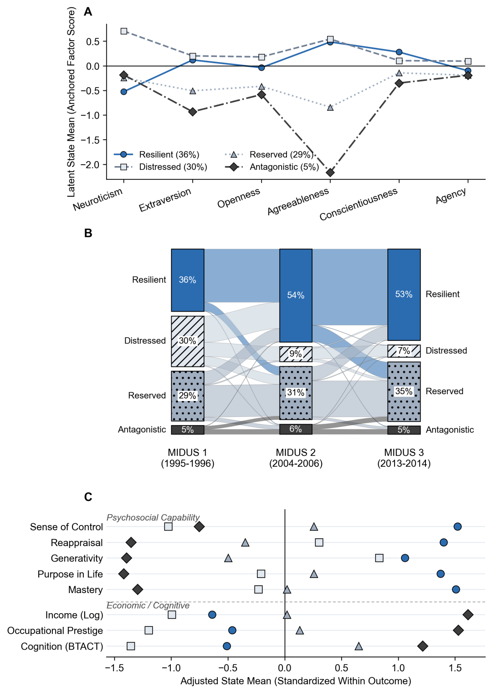
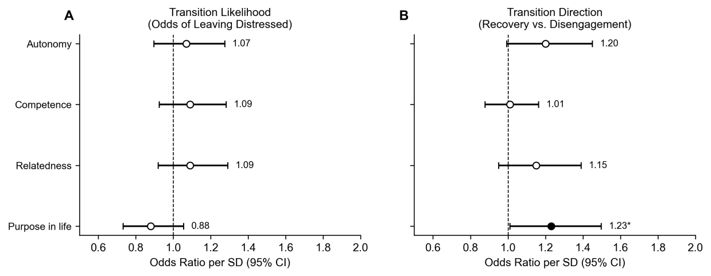

The evidence
Profiles, transitions, and purpose
1 · Profiles, transitions, and skills

2 · Who recovers among Distressed movers

3 · What the models found
- H1 supported. Distressed membership declined across the three MIDUS waves.
- H2 supported. Leavers followed two pathways: recovery to Resilient and disengagement to Reserved.
- H3 supported. Within-person gains in profile standing predicted gains on psychosocial skill criteria.
- H4 (purpose). Among movers, purpose predicted recovery- versus disengagement-oriented transition (OR = 1.23 per SD, 95% CI [1.01, 1.50]).
- H6 supported. Recovered movers showed lower health-related lost productive time (−$3,049 per worker-year, 95% CI [−$5,038, −$1,060]).
- Event-sampled diary data (N = 2,314) corroborated the profile interpretations.